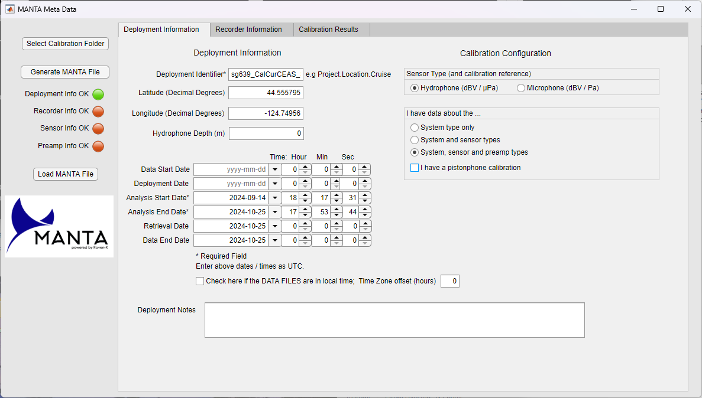
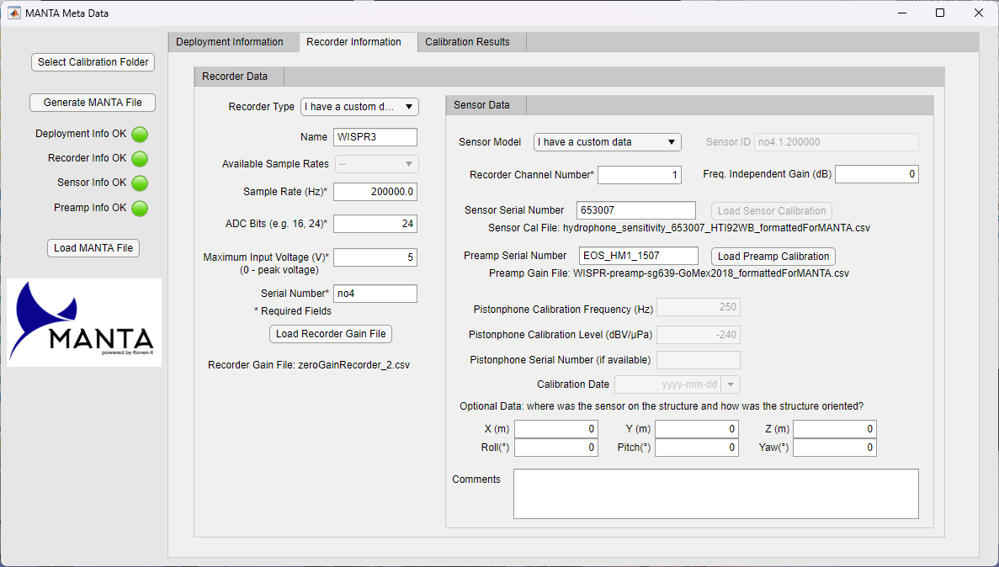
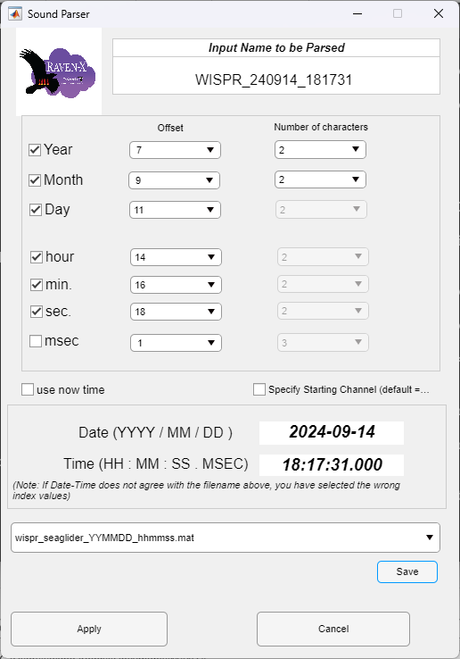

Using MANTA
Open program
- Start menu, navigate to Raven-X
- Alternative
C:\Program Files\RavenX\DataMining_Developer\application\Raven-X.exe(although this will vary based on how/where it was installed) - Standalone version may need to be accessed differently
- Alternative
Two windows appear - a background command window and a MATLAB GUI window
Set metadata
Access Metadata window
- Tools menu > Metadata
New window will pop up
Deployment Information tab
Enter Deployment Information
- For the Deployment Identifier, use standard glider mission string (e.g., sg639_CalCurCEAS_Sep2024)
- Note: The output
_MANTA_Metadata.xlsxfilename cannot be longer than 31 characters so the input mission string can only be a max of 16 characters so may need to use a shortened version like just the glider and year or something
- Note: The output
- Use GPS lat/lon from first dive of GPS Surface Table
- Leave hydrophone depth as 0
- Set Analysis Start Date as the timestamp of the first acoustic file
- Set Analysis End Date as the timestamp of the last acoustic file + the file duration
Deployment Info OK indicator on left will now be green
Calibration Configuration
- Select ‘Hydrophone’
- Select ‘System, sensor, and preamp types’
- Uncheck ‘I have a pistonphone calibration’

Recorder Information tab
Recorder Data
- Set Recorder Type to ‘I have a custom data’
- Set Name to ‘WISPR3’
- Set Sample Rate in Hz (e.g., 200000 for WISPR3)
- Set ADC bits (e.g., 24 for WISPR3)
- Set Maximum Input Voltage (e.g., 5 for WISPR3)
- Set Serial Number as some sort of identifier for that recorder (e.g., no4 for WISPR3)
- Click the ‘Load Recorder Gain File’ button to load the zero gain default file
- Navigate to
MANTA\calibrationinformation\recorders(if installed in default location this should be inC:\Users\user.name\Documents) - Choose the
zeroGainRecorder_2.csv - Note: The default
zeroGainRecorder.csvthat came with MANTA caused an error when loading (only after turning on the preamp setting) but troubleshooting showed that renaming the ‘sensitivity’ column to ‘gain_dB’ got rid of this error
- Navigate to
Sensor Data
The example HTI calibrations (in MANTA\calibrationinformation\hydrophones are not perfect for what we have so created a custom one based on one of the glider hydrophones - a calibrated HTI-92-WB SN#653007. The original and MANTA formatted versions are saved in the noise folder of this repository and a copy was saved within the MANTA calibrationinformation\hydrophones folder. This is the correct calibration to use for some glider missions (that used this hydrophone!)
- Set Sensor Model to ‘I have a custom data’
- Leave Recorder Channel Number as 1 and Freq. Independent Gain as 0
- Fill in the Sensor Serial Number with the hydrophone serial number (e.g., 653007)
- Click ‘Load Sensor Calibration’ to select the correct hydrophone sensitivity file
- This should be a CSV with a column ‘frequency’ and a column ‘sensitivity’
- MANTA provides some example HTI sensitivities (in
MANTA\calibrationinformation\hydrophones) but none of these is correct for the type we have for the Seagliders/WISPR (i.e., the 3 kHz sensitivity of the glider HTI-92-WBs is ~-165 but the MANTA example for HTI-92’s is ~-175) - I created an example Seaglider/WISPR calibration for the HTI-92-WB SN#653007 which is saved in the
noisefolder of this repository
- Enter the Pream Serial Number if available
- If this is not available for WISPR3, an example/representative curve such as EOS_HM1_1507 can be used (THIS NEEDS MORE WORK)
- Click ‘Load Preamp Calibration’
Recorder Info OK and Sensor Info OK indiciators on left will now be green

Calibration Results tab
The output of the calibration input information will be displayed on this tab after everything turns green.

Generate MANTA File
Hit this button and got an error pop-up that syas ‘Deployment parameters: { Depth, Deployment Date } Not set - continue with file creation?’
Just hit Yes
Navigate to the calibratioinformation_files folder as the output folder
Got an error
Error using MANTA_MetaData_App/GenerateMANTAPushed (line 1529)
Invalid sheet name. Name must be text and contain 1-31 characters, excluding :, \, /, ?, *, [, and ].
Error in appdesigner.internal.service.AppManagementService/tryCallback (line 368)
Error in matlab.apps.AppBase>@(source,event)tryCallback(appdesigner.internal.service.AppManagementService.instance(),app,callback,requiresEventData,event) (line 37)
Error using matlab.ui.control.internal.controller.ComponentController/executeUserCallback (line 386)
Error while evaluating Button PrivateButtonPushedFcn.Error went away when identifier was just ‘sg639’ - I think because too long?
Output file is named sg639_MANTA_Metadata.xslx
sg639_Sep2024_MANTA_Metadata
Load sound files
- Right click on black ‘Sound Set’ box and choose ‘Add Sound Set’
- Select the folder
- Set up the timestamp from the names
- Can save it for future use.
- For WISPR_YYMMDD_hhmmss.flac the 2 digit year should start at location 7, 2 digit month at location 9, and so on
- Note: After initial entry/save I got an error but when I tried to repeat and just loaded the saved version it worked fine

Load calibration file
- Right click on black ‘Cal File Assignment’ box and choose ‘Assign Cal (xlsx) to Selected Sounds’
- Navigate to the
MANTA\calibrationinformation\metadata_filesfolder and select the cal file made earlier
Process data
- On the Data Mining Algorithm (but missspelled…) tab, select ’manta.RX.Modules.MIN to get results as hybrid millidecades (HMD)
Set processors
- Open the Tools menu and select Processors
- Specify the number of processors
- Use Task Manager > Performance > CPU to see the number of cores available (listed at bottom)
- Recommended by ONMS is 8
- Set Select Processor Pool to local
- Check box for ReUse Procesing Pools
Check Output settings
- On the Output menu check that the following defaults are all checked:
- pcntl
- psd
- csv
- NetCDF
- mp4

Check Settings settings
- On the Settings menu check that the following defaults are all checked:
- Data Mining - Enable Parallel Output Queues
- Data Mining - Clean Hour Logs During Run
- Time - Merge Intervals
- Time - Force time frame
- Sound Plan - Do Not ReUse Existing Sound Plan

Run
Hit green Run Jobs button
- If you get a firewall message select allow
- I was not able to select allow but hit Cancel and things still seem to be running…
- Watching progress in terminal got some warnings but they didn’t seem to care
Check results
Data is stored in the MANTA\datamining_data\output\DECIIDEC_MinRes folder in a folder for this dataset. The naming seems a bit odd but some pieces of what was input in the metadata should point you to the right thing.
Results will include:
- A figure of the calibration info
- A folder (in this example named
ch_WISPR_240914_181731) that includes 4 folderscsv,netCDF,pctl, andpsd- Within each folder there is a file for each day
Resources
Video instructions: https://drive.google.com/file/d/1RbA654J5C5YJdu9biYzC58kRZOzh9Ofg/view?t=46
Written instructions: https://docs.google.com/document/d/1oGpXJ9dBmjqsrc-_9TtO7ygDLhyMvas1PZdzwTvFD00/edit?tab=t.0